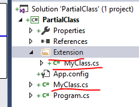

Partial Class
It allows us to split a class into 2 or more files.All these parts are then combined into a single class ,when the application is compiled.
Note for Partial Class: 1)namespace must be same
2)Partial Keyword must be written
3)Must have same class name
Also, Name of each part of partial class should be same but source filename for each part of partial class can be different. 
namespace PartialClass
{ //Class of Extension Folder
partial class MyClass
{
public void method2()
{
Console.WriteLine("method2() called");
}
}
}
namespace PartialClass
{
partial class MyClass
{
public void method1()
{
Console.WriteLine("method1() called");
}
}
}
namespace Program
{
class Program
{
static void Main(string[] args)
{
MyClass obj = new MyClass();
obj.method1();
obj.method2();
}
}
}
Output: method1() called
method2() called
Partial Method